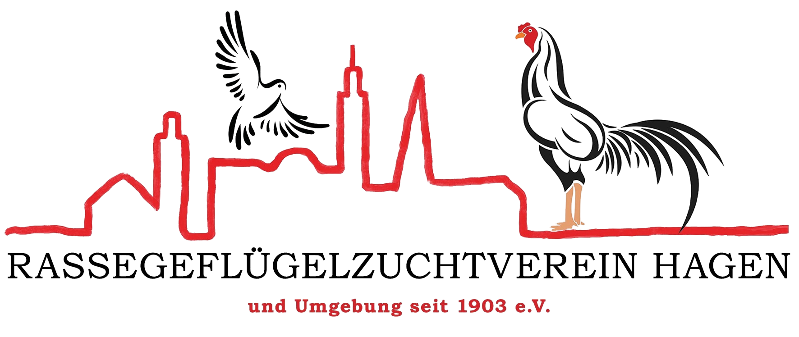

Vergleich Vereinslogo
Direkter Vergleich des unveränderten Originals mit der zusätzlichen PNG-Fassung mit transparentem Hintergrund.

Transparenz auf unterschiedlichen Hintergründen
Die neue PNG-Datei bleibt in allen vier Feldern identisch. Lediglich die Hintergrundfarbe der Vorschau ändert sich.